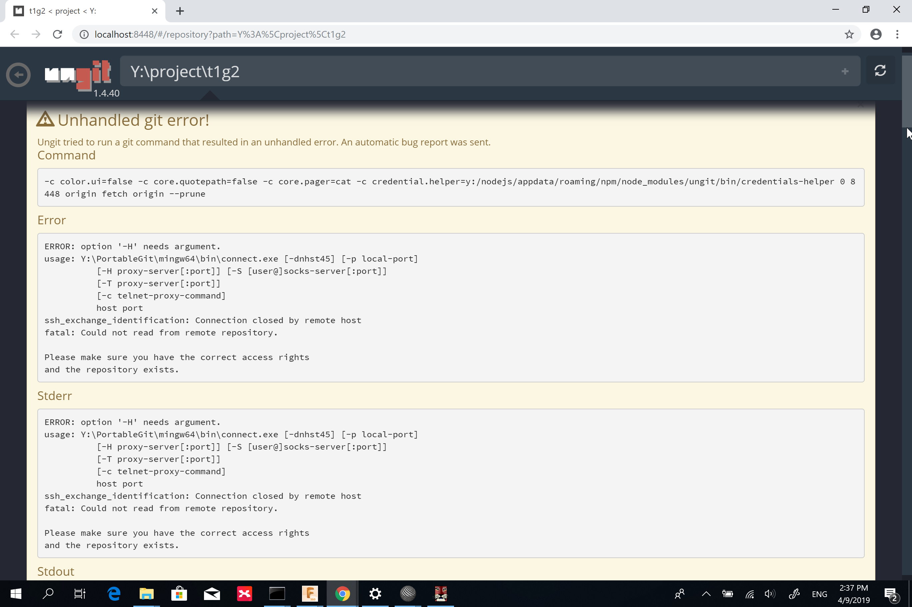
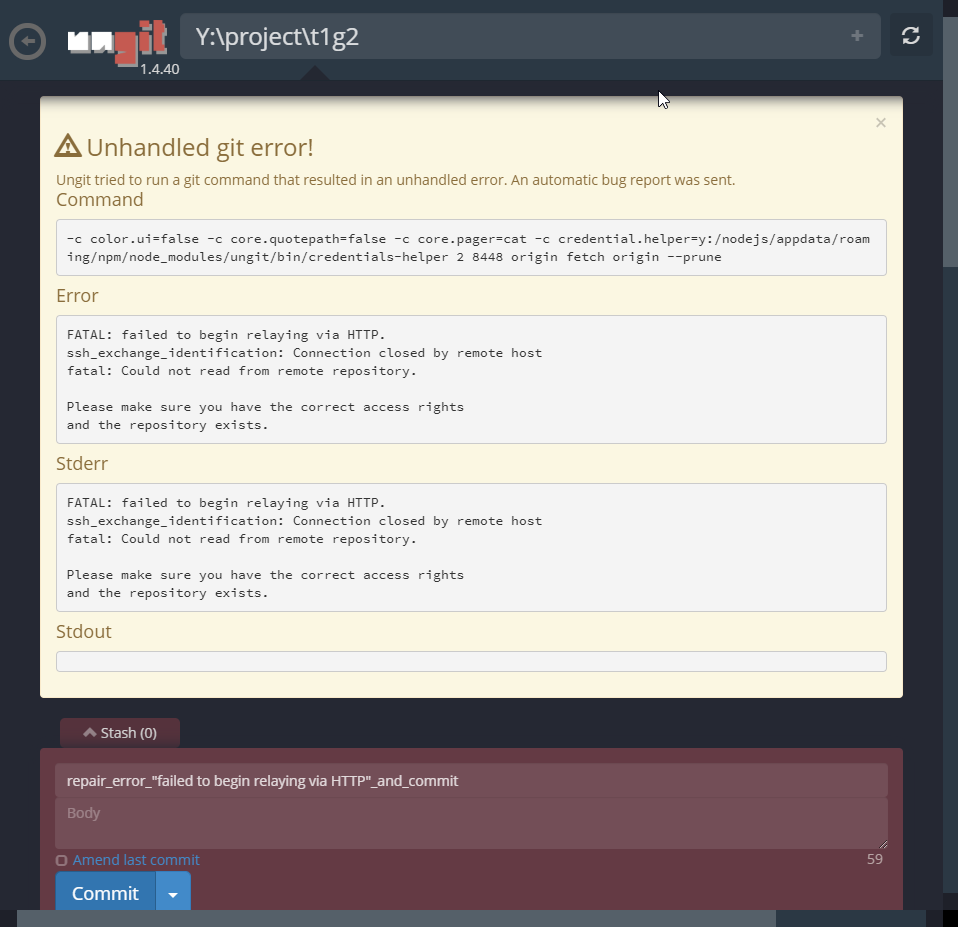

Week5 <<
Previous Next >> Week7
Week6
Ungit 近端版本分支合併，以及小組遠端推送問題。處理過程橫跨 Week6 週末到 Wee7 課程時段。
- 解決推送問題：方案1.
- .config 內容 user1 修正為對應小組學號 40423217：
- .config 內容所描述的 user1 and user2 是謂為同一使用者可以利用 user1 and user2 兩身分，分別進行不同對應帳號，行同一或不同倉儲進行編輯、推送等動作；也因此可以在 .config 內文追加 user3 user4 等身分，行上述作業模式。
- 遂根據上述：20190329推送問題：
- 可能為 .config 內文 user1 並未修正為小組對應學號 40423217 ，遂無法執行 ssh 在小組推送時的身分驗證。
- - ProxyCommand y:/PortableGit/mingw64/bin/connect.exe
- -H 140.130.17.32:3128
-
- for 40423217
- url = git@github.com_40423217:mdekmol/cd2019b-task1-2019cdb_t1_g2.git
- Host github.com_40423217
- User git
- Port 22
- Hostname github.com
-
- IdentityFile "y:\home\.ssh\id_rsa_40423217"
-
- TCPKeepAlive yes
- IdentitiesOnly yes
-
- for user2
- url = git@github.com_user2:user2/user2.com.git
- Host github.com_user2
- Port 22
- Hostname github.com
-
- IdentityFile "y:\home\.ssh\id_rsa_user2"
-
- TCPKeepAlive yes
- IdentitiesOnly yes
-
持續嘗試推送，在 ungit 視窗出現錯誤：
-
- connect --- simple relaying command via proxy.
- Version 1.105
- usage: Y:\PortableGit\mingw64\bin\connect.exe [-dnhst45] [-p local-port]
- [-H proxy-server[:port]] [-S [user@]socks-server[:port]]
- [-T proxy-server[:port]]
- [-c telnet-proxy-command]
- host port
- ssh_exchange_identification: Connection closed by remote host
- fatal: Could not read from remote repository.
Please make sure you have the correct access rights
- and the repository exists.
- 
-
-
針對方案 1 狀況處理：
- - ProxyCommand y:/PortableGit/mingw64/bin/connect.exe -H proxy.kmol.info:3128 %h %p(為加上此程式，短暫的不再出現錯誤後可執行檢視，不曉得其功能)
- for user1
- url = git@github.com_user1:user1/cmstest.git
- Host github.com_user1
- User git
- Port 22
- Hostname github.com
- IdentityFile "y:\home.ssh\id_rsa_user1"
- TCPKeepAlive yes
- IdentitiesOnly yes
- for user2
- url = git@github.com_user2:user2/user2.com.git
- Host github.com_user2
- Port 22
- Hostname github.com
- IdentityFile "y:\home.ssh\id_rsa_user2"
- TCPKeepAlive yes
- IdentitiesOnly yes
在未指定proxy進行推送時出現錯誤，仍可持續進行推送

Week5 <<
Previous Next >> Week7